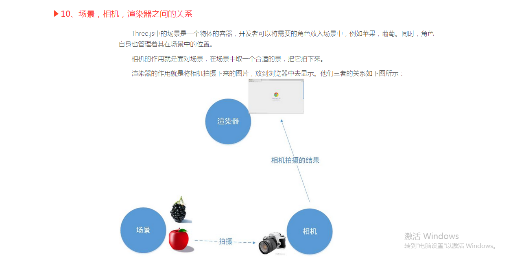

①scene、camera、renderer三者之间的关系

②初始化scene、camera、renderer对象：
var scene = new THREE.Scene(); // 场景
var camera = new THREE.PerspectiveCamera(75, window.innerWidth/window.innerHeight, 0.1, 1000);// 透视相机
var renderer = new THREE.WebGLRenderer(); // 渲染器
renderer.setSize(window.innerWidth, window.innerHeight); // 设置渲染器的大小为窗口的内宽度，也就是内容区的宽度
document.body.appendChild(renderer.domElement);
//注意，渲染器renderer的domElement元素，表示渲染器中的画布，所有的渲染都是画在domElement上的，所以这里的appendChild表示将这个domElement挂接在body下面，这样渲染的结果就能够在页面中显示了。
③添加物体到场景中
| var geometry = new THREE.CubeGeometry(1,1,1); |
| var material = new THREE.MeshBasicMaterial({color: 0x00ff00}); |
| var cube = new THREE.Mesh(geometry, material); |
| scene.add(cube); |
//其中，THREE.CubeGeometry是几何体的定义，具体原型为：
CubeGeometry(width, height, depth, segmentsWidth, segmentsHeight, segmentsDepth, materials, sides)
width：立方体x轴的长度
height：立方体y轴的长度
depth：立方体z轴的深度，也就是长度
④渲染
1、渲染：渲染应该使用渲染器，结合相机和场景来得到结果画面。实现这个功能的函数是 renderer.render(scene, camera);该方法原型是：
render( scene, camera, renderTarget, forceClear )
scene：前面定义的场景
camera：前面定义的相机
renderTarget：渲染的目标，默认是渲染到前面定义的render变量中
forceClear：每次绘制之前都将画布的内容给清除，即使自动清除标志autoClear为false，也会清除。
2、渲染循环：
//基于1，加上循环渲染函数requestAnimationFrame（）
function render() {
cube.rotation.x += 0.1;
cube.rotation.y += 0.1;
renderer.render(scene, camera);
requestAnimationFrame(render);//requestAnimationFrame（functionName）实现实时刷新渲染scene
}